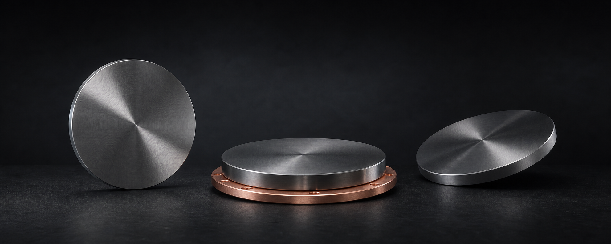

Targets to Functional Films
从靶材，到功能薄膜
在真空腔体中，等离子体里的离子轰击靶材表面。靶材中的原子被释放，穿过真空环境， 在玻璃、晶圆或其他基底上重新排列，形成纳米到微米尺度的功能薄膜。
Inside a vacuum chamber, ions in a plasma strike a sputtering target. Atoms are released, travel through the vacuum, and rearrange on glass, wafers, or other substrates to form functional films only nanometres or micrometres thick.
这些薄膜可以成为显示面板中的透明导电层、电极层或功能层；进入半导体器件形成导电、 阻挡、介质或功能结构；也可以成为光学器件上的增透膜、反射膜、滤光膜或磁性薄膜。
These films become transparent conductive layers and electrodes in displays, conductive or barrier structures in semiconductors, optical coatings that guide light, and magnetic films used in data storage and precision sensing.